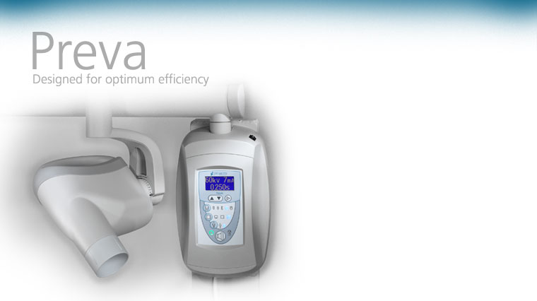

Лечение зубов без хирургического вмешательства называется терапевтической стоматологией.
Данный раздел стоматологии изучает способы лечения, а также профилактику заболеваний зубов, сохраняя
их морфологическую целостность.
В нашей стоматологической клинике установлено современное оборудование и работают опытные специалисты.
Наши стоматологи предложат Вам варианты лечения и реставрации зубов после комплексной диагностики.
Мы используем фотополимерные пломбировочные материалы Filtek, Gradia, Charisma производства США,
Японии, ФРГ. Не менее важно и то, что те методики, которые мы применяем, позволяют не только добиться
превосходных результатов, но и предупредить возникновение всевозможных осложнений, а также провести
необходимые процедуры и позаботиться о психологическом комфорте пациента.
Одной из самых распространенных причин обращения к врачу-стоматологу — кариес. А ведь именно он
становится причиной таких заболеваний как пульпит и периодонтит (происходит повреждение более глубоких
слоев тканей зуба). Проблема становится все более заметной и возникает риск потерять зуб. Поэтому
своевременное лечение зубов так важно.
Посещать стоматолога необходимо как минимум один-два раза в год. В случае появления неприятного запаха
изо рта обязательно следует задуматься о том, что это может свидетельствовать о скрытом заболевании зуба.
Вылечить самостоятельно зубную боль в домашних условиях наверняка не получиться. Можно лишь временно
снять боль и избавиться от неприятного запаха изо рта. На самом деле это всего лишь маскировка проблемы.
Только терапевтическая помощь стоматологов нашей клиники может действительно помочь!
Наверняка все люди мечтают о великолепной улыбке при максимальной сохранности своих зубов. В наше
время это стало возможным благодаря тому, что стоматология сегодня творит чудеса!
Мы можем предложить Вам следующие виды современного протезирования:
- Цельнокерамические конструкции (самое лучшее, что может предложить современная стоматология).
Использование новейших технологий и методик лечения зубов позволяет использовать на практике
цельнокерамические реставрации, которые гораздо лучше металлокерамических так как:
- Устанавливаемая конструкция имеет толщину всего 0,5 мм.
-
Превосходная эстетика, коронка неотличима от натурального зуба, поскольку материал соответствует
прозрачности зуба.
- Установленная конструкция является неприметной, отсутствуют темные полосы.
-
Отсутствие металла во рту. Современные стоматологи стараются при протезировании зубов полностью
избежать или минимизировать количество применяемого металла. Эта тенденция прослеживается во всем
мире. Одна из причин - это то, что при отказе от металла снижается риск индивидуальной непереносимости
или аллергической реакции у пациента. При применении цельнокерамических конструкций какие-либо
аллергические реакции со стороны организма пациента исключены.
- Металлокерамические конструкции.
-
Отличная эстетика. Используя металлокерамику можно добиться практически полного соответствия
искусственных зубов натуральным как по внешнему виду, так и по функции.
-
Превосходная функциональность. Металлокерамическими искусственными зубами (при условии их
правильного изготовления) можно отлично пережевывать пищу, также как и своими зубами, а в некоторых
случаях даже лучше.
-
Долговечность. Металлокерамика очень точно одевается на зуб. Следовательно, между коронкой и зубом
пища и слюна не попадают, кариес под коронкой не развивается (в случае правильного и точного
изготовления). В результате коронка служит дольше. На сегодняшний день металлокерамика — одна из
самых долговечных конструкций из возможных в стоматологии. Средний срок службы металлокерамики на
неблагородном сплаве — 10-12 лет, на титане или золото-платиновом сплаве — 12 лет и более. Такой
срок службы металлокерамической коронки возможен, только если она сделана с применением современных
материалов и методик.
- Цельнолитые коронки, мостовидные протезы.
- Штампованно-паяные конструкции.
Съемное протезирование
Cъемное протезирование делается только в том случае, когда у пациента в ротовой полости нет зубов,
на которые можно было бы установить несъемную конструкцию, и нет возможности установить имплантат.
Съемные зубные протезы бывают нескольких видов:
- Нейлоновые съемные протезы.
- Съемные протезы на аттачментах(бюгельные зубные протезы с замковыми креплениями, с микрозамками).
- Пластиночные съемные протезы (полные и частичные).
Cпециалистами частного предприятия «Савицкая Е.Э.» используются инновационные технологии лечения
и профилактики заболеваний зубов. Наш специалист может вам подсказать, какой вид протезирования
идеально подойдет для вас. Протезирование осуществляет ортопед. Именно он определяет, какие зубы
подлежат лечению, какие удалению (т.е. составляет план действий для врача-стоматолога-хирурга и
врача-стоматолога-терапевта).
Наша клиника оснащена самым современным стоматологическим интраоральным рентгеновским аппаратом Preva от компании Progeny-A Midmark Company (США), а также цифровой сенсорной системой (радиовизиографом)
Progeny Clearvision того же производителя.
Эта интраоральная рентгенографическая система новейшего поколения способна удовлетворить запросы
наших пациентов. Изображение полученное с помощью аппарата будет максимально четким.
Облучение пациента будет минимальным.
Рентгеновские изображения, которые мы получаем с помощью нашего рентгеновского аппарата имеют высокую
детализацию и контрастностность, что в свою очередь позволяет использовать эти изображения по
широкому ряду показаний, а именно:
- Диагностировать кариес, пульпит, периодонтит.
- Проводить эндодонтию.
- Определять расположение зубов в зубном ряду и сосотяние корневой системы зубов.
